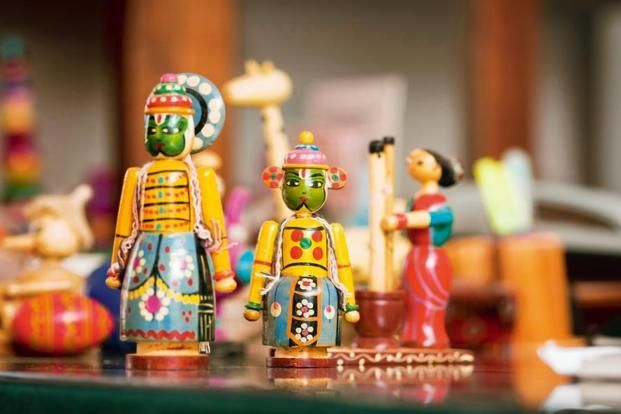
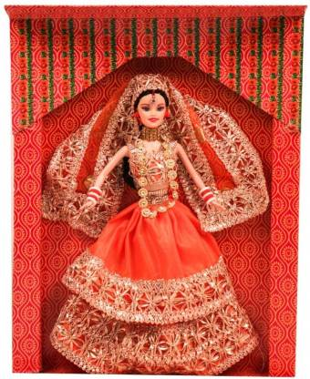
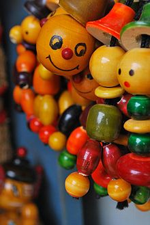

--Made in India
India has a rich legacy in toy-making. Historically Indian toys date back to 5000 years. The excavated
toys and dolls found in Harappa and Mohenjo-Daro included small carts, dancing woman, etc.
India has a rich culture of storytelling through its toys. Our ancestors have been preserving this culture
by making toys which show a perspective of life. The religious influence also led to a different set of
toys depicting stories from epics like Ramayana and Mahabharata.
| Tradition | Culture | Art |
|---|---|---|
|  |  |  |
@This site is made for educational purpose and this is based on traditional indian toys. This site is not ment for any offical use so please be cautious before entering your details.